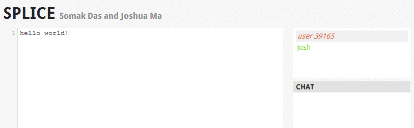

Projects and Coursework
MIT was a fun three years - here's an effort to highlight the technical parts.
Splice (splice.josh.ma) 6.824 Distributed Systems
Partnered with Somak Das - Go and JavaScript
Splice is a peer-to-peer, live text editor à la Etherpad or Google Docs, moving information processing to the participating peers only. A central server is used to serve the initial HTML/JS/CSS assets and broker connections between peers - all further communication is done peer-to-peer over WebRTC (via PeerJS). Splice handles operational transforms in a distributed environment, promising eventual consistency, and supports cursor data, user names, and chat. Project writeup, code on Github.
Octopus 6.829 Computer Networks
Partnered with Somak Das - ANSI C and Java
Octopus is a fork of TightVNC (the old, open source 1.3 version) that improves on VNC's RFB protocol under poor network conditions. Octopus is resilient to high latency (actively pushes frames to client instead of waiting for client requests), high loss rates (lossy transport over UDP is combined with intelligent retransmissions), and varying bandwidth (adapts quality and framerate to match sampled bandwidth). Writing in ANSI C can be a nostalgic experience. Project writeup, code on Github.
Polymerase 6.UAP Senior Project
Good ol' Java
Polymerase is a Java library to add Paxos-based replication across a set of servers. It works by instantiating a Replicator that takes in (serializable) objects and returns replicated proxies. Any method calls on the returned objects are automatically replicated across all configured servers - Paxos ensures reliability and consistency even under failure of (a minority of) servers.
Replicated method calls are applied in a consistent order across all servers. Polymerase uses a log-and-play approach to achieve consistency. Further mechanisms allow for finer-grained serialization controls. @AllowStale is a decorator on methods to allow best-effort calls without first waiting for the object to become up to date. By default, consistent serialization is enforced across all method calls - @InstanceParallel and @ClassParallel decorators allow parallelization at the instance and class levels, respectively.
Process Migration in JOS 6.828 Operating Systems
Partnered with Thomas Georgiou and Mark Zhang - low level C
We implemented process migration in JOS, a lightweight exokernel operating system. A migration daemon runs in the background, and an accompanying user-level binary initiates the migration by taking in a process ID and a target host. The process is frozen, and its state (including call statck and allocated memory) is transferred to the new host where it is resumed. Our implementation of process migration allows for shared memory between local and migrated processes as well as remote, forwarded system calls from migrated processes.
Starbucks 6.035 Compilers
Java
Starbucks is a Decaf (think Java, but simplified) compiler written in Java. It actually outputs to NASM syntax, where it's compiled and linked. Optimizations include dead code elimination, common subexpression elimination, copy propagation, register coloring, algebraic simplification, and loop unrolling.
Coursework Fall 2010 - Spring 2013
-
Spring 2013
- 6.824 Distributed Systems
- 6.829 Computer Networks
- 6.207 Networks
- 6.041 Probabilistic Systems Analysis
- 6.170 Web Software Studio (TA)
- 6.UAP Undergraduate Advanced Project
-
Fall 2012
- 6.172 Performance Engineering
- 6.828 Operating Systems
- 14.27 Economics of Ecommerce
- 6.UAT Preparation for Undergraduate Advanced Project
- 21F.301 French I
-
Spring 2012
- 6.033 Computer System Engineering
- 6.035 Computer Language Engineering (aka Compilers)
- 6.046 Design and Analysis of Algorithms
- 21W.789 Communicating with Mobile Technology
- 21M.301 Harmony and Counterpoint I
-
Fall 2011
- 6.004 Computation Structures
- 6.005 Software Construction
- 6.034 Artificial Intelligence
- 6.02 Introduction to EECS II
- 14.01 Principles of Microeconomics
-
Spring 2011
- 6.006 Introduction to Algorithms
- 6.042 Mathematics for Computer Science (aka Discrete Math)
- 6.01 Introduction to EECS I
- 18.06 Linear Algebra
-
Fall 2010
- 21W.785 Communicating with Web-Based Media
- 7.012 Introductory Biology
- 3.091 Introduction to Solid-State Chemistry
- 14.02 Principles of Macroeconomics